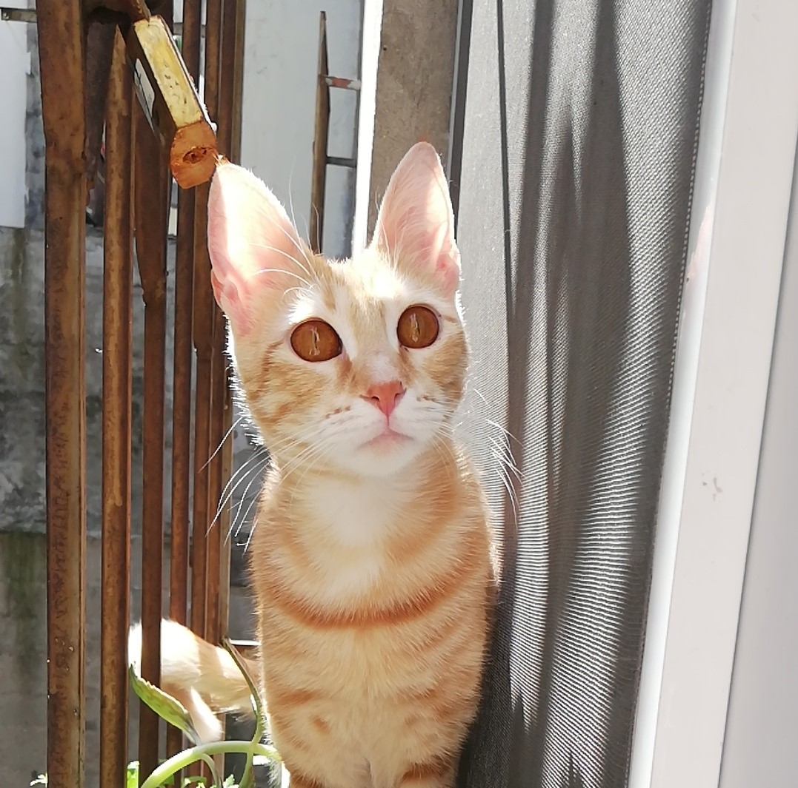
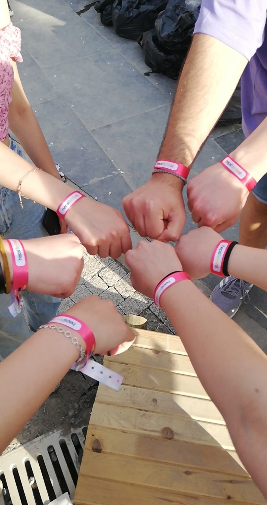
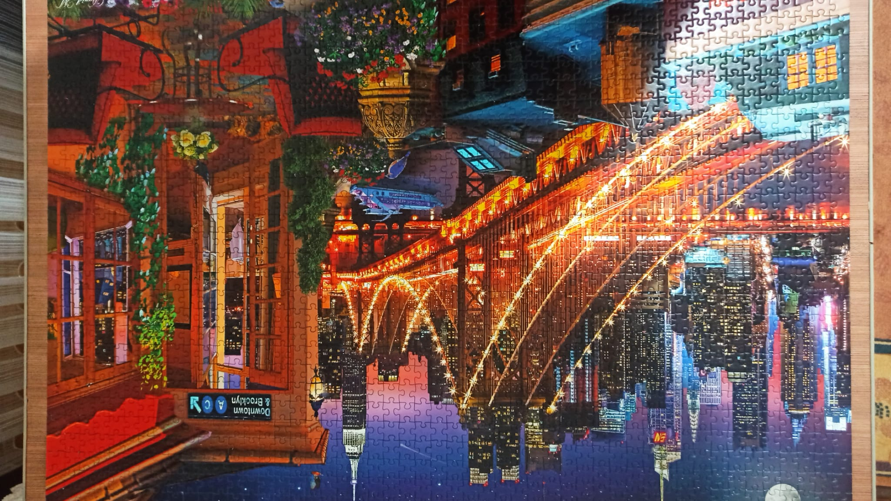

Kahve.
Kahve Çeşitleri
Arabica Kahve
Arabica Kahve, dünyada en yüksek sayıda üretilen çekirdek türü. Neredeyse içtiğiniz kahvelerin %60’ı Arabica çekirdeklerinden hazırlanıyor. Yüksek kaliteli kahveden bahsetmek gerekirse kesinlikle Arabica tercih etmekte fayda var. Arabica kahveleri az miktarda alıp, kısa sürede taze olarak tüketmek ve mümkün olduğunca sıcak ve sade olarak içmek gerekiyor.Robusta Kahve
Robusta Kahve ise Arabica’ya göre daha da acı olan bir kahve çeşidi. Günümüzde üretilen kahvelerin %30’u Robusta kahve. Daha alçak bölgelerde daha kısa sürede yetişebilen bir kahve türü. Brezilya ve Vietnam’da çoğunlukla Robusta türü kahve üretiliyor. Robusta kahve, Arabica’nın aksine her koşula dayanıklı bir kahve türü. Daha çok espresso ve hazır kahveler için tercih ediliyor. Sütlü, şekerli ya da soğuk kahve sevenlerin Robusta çekirdekleriyle sunulan kahveleri tercih etmesi tavsiye ediliyor. Lezzeti ve aroması tüm bunlara dayanabilecek baskınlıkta oluyor.Liberica Kahve
Liberica Kahve ise 1890’lı yıllarda dünya Arabica stokunun %90’ı tükendiği bir dönemde kullanılmış. Filipinler kökenli bu kahve türünün çekirdeği diğerlerine nazaran daha iri taneli. Lezzet ve aroma olarak ise daha isli ve yavan.Excelsa Kahve
Excelsa Kahve ise Liberica’nın bir alt türü olmasına rağmen ondan büyük farklılıklar gösterdiğinden ayrı bir çekirdek türü olarak kabul ediliyor. Excelsa, büyük çoğunlukla Güneydoğu Asya’da yetişiyor ve dünya kahve dolaşımının %7’sini oluşturuyor. Aromasını çok güçlü olduğundan sadece harman kahvelerin içindeki aromayı güçlendirmek için çok az miktarda kullanılıyor.Americano
Americano kahve, bir veya iki shot espressonun üzerine kaynar su eklenmesiyle hazırlanıyor ve espresso ile filtre kahve arası bir tat sunuyor. Espressodan daha yumuşak ama filtre kahveden daha sert bir aroma elde ediliyor. Filtre kahveye alışmış Amerikan askerleri, II. Dünya Savaşı sırasında İtalya’da espresso kahveyle tanışmışlar. Sert, yoğun ve miktarca az gelen bu kahveyi üzerine kaynar su ekleterek tüketmişler. Adını buradan alıyor.
Latte
Cafe Latte, fincanınızın büyüklüğüne göre 1 ya da 2 shot espresso üzerine ısıtılmış süt eklenmesiyle hazırlanıyor. Üzerine isteğe bağlı biraz süt köpüğü ilave ediliyor. Kahveye henüz alışamamış olanlar içimi yumuşak olduğundan daha çok bu kahve çeşidini tercih ediyor. Baristaların espressonun üzerine döktükleri sütle çeşitli şekiller ortaya çıkardıkları ‘latte sanatı’ bu kahve ile hazırlanıyor.
Filtre Kahve
Filtre kahve, orta çekilmiş kahvenin bir filtreden süzülen su yardımıyla demlenmesiyle elde edilen bir kahve çeşidi. Benim en sevdiğim kahve türü aynı zamanda. Espressodan farklı olarak kahve bir filtre kağıdına veya metal filtreye konuyor ve su yavaş bir şekilde damlatılarak bu kahvenin içirişinden geçirtiliyor.
Türk Kahvesi
Türk Kahvesi, kahve üretmediği halde bir ürünü kendine özgü bir pişirim tekniğiyle hazırlayıp kendi kültürü ile özdeşleştirmiş bir kahve çeşidi. Kendisine has kahve öğütme yöntemiyle ince çekilmiş kahveyle hazırlanan Türk kahvesi, kendine özel bardağı ve yanında lokum ve suyla servis ediliyor. Telveli olan bu kahve türü şekerli, şekersiz ve bol köpüklü olarak tercih ediliyor.
Mocha
Mocha kahve, adını Yemen’deki Mocha şehrinden alan bu kahve çeşidi. 2 shot espresso, 2 shot çikolata şurubu ve süt köpüğü ile hazırlanıyor. Acı kahve tadından hoşlanmayanların tercihi.
-

Americano
-

Latte
-
Filtre Kahve
-
 Türk Kahvesi
Türk Kahvesi -

Mocha